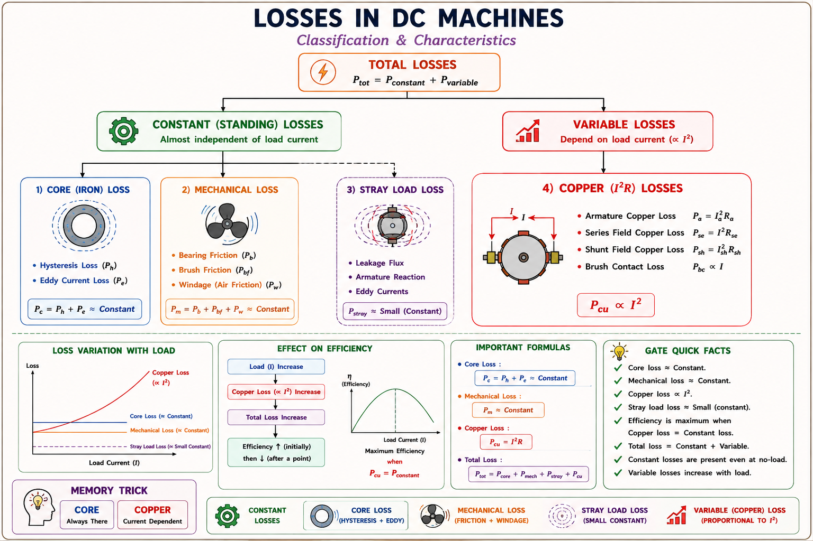
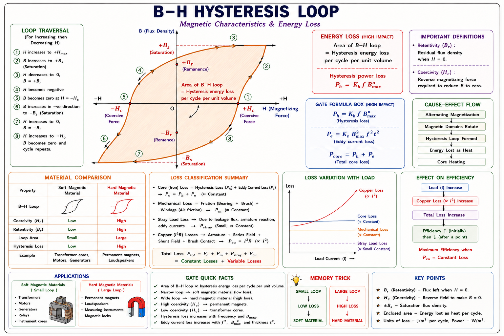
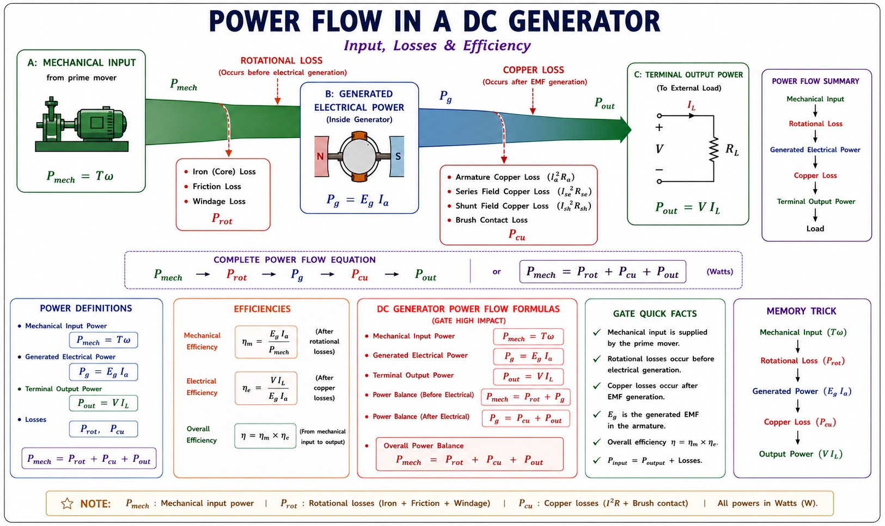
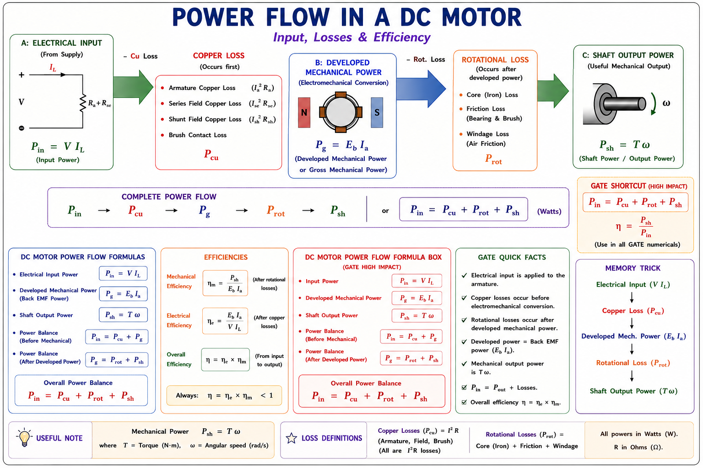
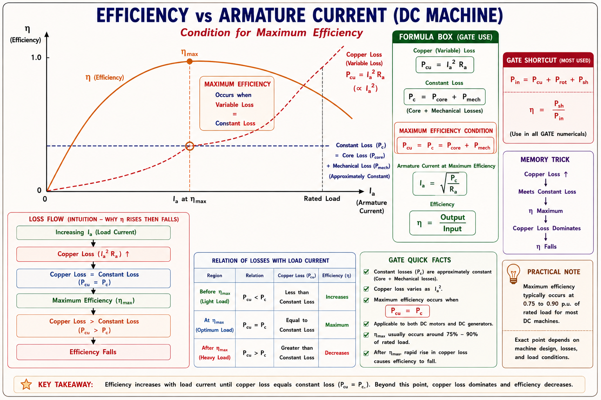
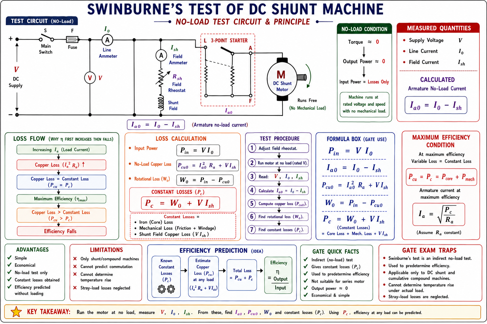
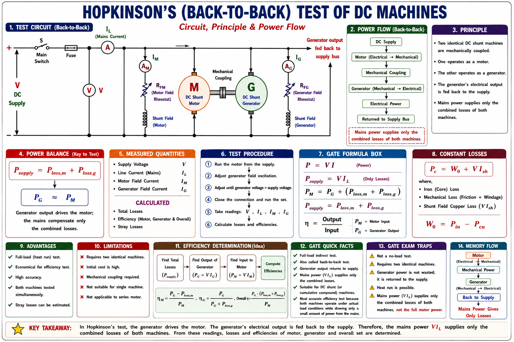
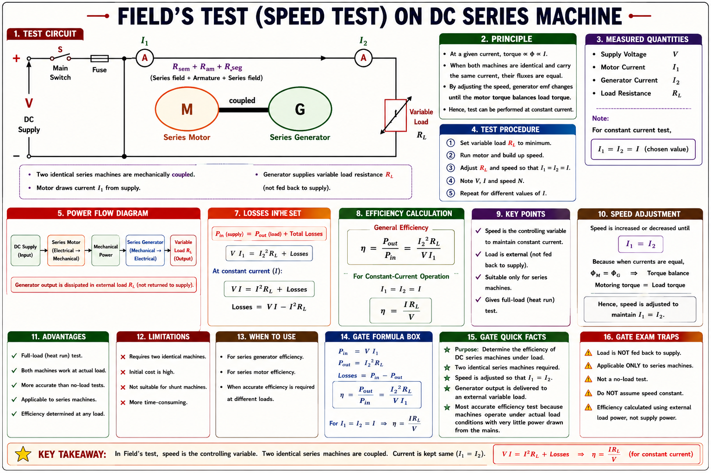
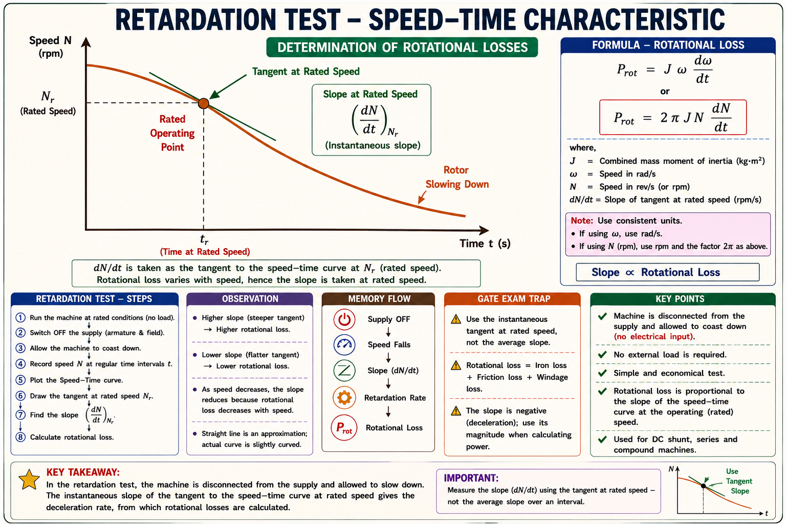

Classification of losses, the power-flow diagram, the condition for maximum efficiency, and the four classical indirect testing methods — Swinburne's test, Hopkinson's (back-to-back) test, Field's test, and the retardation test — with full derivations, GATE/IES traps, and solved numericals.
Every DC machine — whether working as a generator converting mechanical power into electrical power, or as a motor doing the reverse — cannot convert 100% of the input into useful output. Some energy is inevitably converted into heat inside the iron core, in the resistance of the windings, and in overcoming friction and air resistance of rotating parts. This wasted energy is called loss, and understanding it is central to two very practical engineering problems.
First, losses heat up the machine. Temperature rise degrades winding insulation, shortens machine life, and ultimately limits how much continuous load a machine of a given frame size can safely carry — this is why every nameplate carries a rated kW figure. Second, losses cost money over the operating life of the machine, so a designer wants to know, before the machine is even loaded, how efficiently it will run at different loads. Both problems are solved by the same exercise: identify every loss mechanism, quantify how each one varies with load, and use that information to test the machine without necessarily loading it to full capacity.
Large DC machines (thousands of kW, common in rolling mills and traction) simply cannot be loaded to full capacity in a test lab — a load bank of that size may not exist, and the power wasted would be enormous. This single practical constraint is what motivates the entire family of indirect testing methods covered later in this chapter.
Every loss inside a DC machine falls into one of three physical categories. Grouping them this way — rather than by where they occur — is what makes the later testing methods work, because each category behaves differently with load.

| Loss | Depends On | Behaviour With Load |
|---|---|---|
| Hysteresis loss | Flux density, frequency, core volume | Constant (flux ≈ fixed) |
| Eddy current loss | Flux density, frequency, lamination thickness | Constant (flux ≈ fixed) |
| Friction loss | Bearing / brush pressure, speed | Constant (speed ≈ fixed) |
| Windage loss | Speed, fan/rotor geometry | Constant (speed ≈ fixed) |
| Armature copper loss | Armature current² | Variable — I_a²R_a |
| Shunt field copper loss | Shunt field current² (fixed for given V) | Constant — V·I_sh |
| Series field copper loss | Line current² (= armature current) | Variable — I²R_se |
| Brush contact loss | Armature current × brush drop | Nearly variable (often lumped with Cu loss) |
Shunt field copper loss (V·I_sh) looks like a "copper" loss by name, but it behaves as a constant loss because the shunt field current does not change with armature load current — it only depends on the fixed supply voltage and field resistance. Always classify losses by their behaviour with load, not by their name.
As the armature rotates inside the fixed magnetic field of the poles, each element of the laminated iron core experiences a magnetic flux that reverses direction twice every revolution (once under a N-pole, once under an S-pole). This continuous cycling of magnetisation is the root cause of both hysteresis and eddy current loss.
For a machine with P poles running at N rpm, each conductor location passes under a pair of poles P/2 times per revolution. The frequency of flux reversal in the armature core is therefore:
where P = number of poles, N = speed in rpm. This is the same expression used for the frequency of the generated EMF in an equivalent AC machine and is the starting point for every iron-loss calculation.
Every time the core material's magnetisation is driven around a full B–H loop, energy proportional to the area enclosed by that loop is dissipated as heat — this is because the magnetic domains resist realignment (a property called retentivity/coercivity) and this internal friction shows up as an additional current the source must supply. Steinmetz's empirical formula, verified across decades of transformer and machine design, gives:

The rotating core is also a conductor sitting inside a changing flux, so by Faraday's law small circulating currents — eddy currents — are induced within the body of the iron itself. These currents dissipate I²R heat directly inside the core. To limit them, the armature core is built from thin, mutually-insulated laminations rather than solid iron; this forces the eddy current loops to close within a thin sheet, keeping the induced EMF and current small. The eddy current loss is given by:
Because eddy current loss varies as t², halving the lamination thickness cuts this loss to one-quarter — this is why cores are built from thin sheets (typically 0.35–0.5 mm) rather than solid blocks, even though thinner laminations cost more to stack and insulate.
If the flux density B_m (set by field excitation) and speed N (hence frequency f) stay essentially constant as load changes — which is the normal operating condition for a shunt machine on a stiff supply — both W_h and W_e stay essentially constant. This is why iron loss is grouped with mechanical loss as a "constant" or "rotational" loss. In reality, armature reaction slightly distorts and increases the flux under load, causing a small rise in iron loss that is usually neglected in standard testing calculations.
Whenever current flows through a winding of finite resistance, I²R heat is generated. In a DC machine this occurs in several separate windings, and GATE frequently tests whether a student can correctly identify which combination applies to shunt, series, and compound machines.
| Machine Type | Copper Losses Present | Relation |
|---|---|---|
| Shunt | Armature Cu loss + Shunt field Cu loss | I_a²R_a + V·I_sh |
| Series | Armature Cu loss + Series field Cu loss | I_a²R_a + I_a²R_se |
| Long-shunt compound | Arm. + series field (carries I_a) + shunt field | I_a²(R_a+R_se) + V·I_sh |
| Short-shunt compound | Arm. + series field (carries I_L) + shunt field | I_a²R_a + I_L²R_se + V·I_sh |
A small, often-overlooked loss occurs at the brush-commutator contact due to the contact voltage drop (typically ≈ 1 V per brush pair for carbon brushes) multiplied by armature current. Because this drop is roughly constant, brush loss is approximately proportional to I_a rather than I_a² — but it is small enough that it is usually lumped together with armature copper loss in exam-level calculations.
Two distinct mechanisms make up the mechanical loss, and both depend primarily on rotational speed rather than on electrical loading:
Iron loss (constant, from flux) and mechanical loss (constant, from speed) together are called rotational losses or stray losses — the total power a machine loses purely by virtue of spinning at rated speed with rated flux, before any load current is even drawn. This single combined number is exactly what Swinburne's test measures in one shot.
Efficiency is simply the ratio of useful output power to the total input power supplied:
It is easiest to see how power is progressively lost by tracking it through three stages, A → B → C. The identity of A, B and C flips depending on whether the machine works as a generator or a motor.


Combining constant loss W_c (iron + mechanical + shunt field Cu loss) with variable armature copper loss gives the two working formulas used constantly in testing calculations:
Direct test: the machine is actually loaded, output and input are both physically measured, and η = output/input. It is the most accurate method (captures every loss, including stray load loss and true temperature rise) but is impractical for large machines. Indirect test: the machine is not loaded — losses are measured separately and added to a calculated output/input. It is economical and safe for large machines, but slightly less accurate since it does not fully capture stray-load loss or genuine temperature rise.
Since constant loss W_c stays fixed while variable loss I_a²R_a grows with the square of current, efficiency first rises (as fixed losses become a smaller fraction of a growing output) and then falls (as I²R loss begins to dominate). Somewhere in between lies a maximum. To find it, write η as a function of I_a and differentiate.
For a generator delivering output VI_L (taking I_a ≈ I_L for a shunt machine):
η is maximum when the denominator is minimum. Differentiating the denominator with respect to I_a and setting it to zero:
Maximum efficiency occurs at the load current where variable (copper) loss exactly equals constant (rotational) loss. This is true for both generators and motors, and is independent of terminal voltage. It lets a designer instantly find the best-efficiency operating point once W_c and R_a are known from a Swinburne's test.

The load current at which maximum efficiency occurs is a designer's choice — by proportioning the amount of iron and copper used in the machine, W_c and R_a can be shifted so that η_max falls near the expected typical operating load (often 3/4 to full load) rather than at very light or very heavy load.
Swinburne's test is the simplest indirect method, applicable to shunt and compound DC machines. The core idea: run the machine as an unloaded motor at rated voltage and rated speed. At no load, the only mechanical output required is to overcome the machine's own rotational losses — so the electrical input at no load, minus the small no-load armature copper loss, must equal the constant loss.

A single no-load run predicts efficiency at any load current, for the machine working as either motor or generator — this is what makes Swinburne's test so economical: minimal power is wasted (only the small no-load input), and no large load bank or coupled machine is needed.
(1) Does not account for the change in iron loss caused by armature reaction at actual load. (2) Temperature rise at full load is never verified, so thermal-limited rating cannot be confirmed. (3) Stray-load loss (extra loss due to distorted flux/leakage under load) is not captured. (4) Cannot be used for series machines — a series motor has no fixed field current at no load, so speed (and hence rotational loss) is not well-defined without a mechanical load.
Swinburne's test never actually loads the machine, so it cannot verify full-load temperature rise or commutation performance. Hopkinson's test solves this by loading the machine fully while drawing only a small amount of net power from the supply — the trick is to couple two identical shunt machines mechanically, run one as a motor and the other as a generator, and electrically connect the generator's output back in parallel with the supply feeding the motor.

If the small difference between the two field currents is ignored and losses in the two machines are assumed equal, a simple current-ratio formula results. Let I₁ = generator armature/output current and I₂ = the extra current drawn from the supply (the "topping-up" current that represents total losses of the set):
Since total mains input V·I₂ equals the combined losses of both machines, and assuming both machines share those losses equally, algebraic manipulation (with η_gen ≈ η_mot ≈ η) leads to the compact approximate result:
The approximate method is only a rough estimate because the two machines don't actually have identical copper losses (their armature currents differ slightly, since one carries I₁ and the other I₁+I₂). The accurate method separates out each machine's own copper loss using its individually-measured armature and field resistances, and lumps everything else (iron + mechanical loss of both machines combined) into one "rotational loss" term P_R:
This combined rotational loss is then assumed to be shared equally between the two identical machines (P_R/2 each) — a reasonable assumption since both run at essentially the same speed and flux — after which each machine's individual efficiency is calculated using its own measured copper loss plus its share of rotational loss.
| Aspect | Approximate Method | Accurate Method |
|---|---|---|
| Assumption | Losses equal in both machines | Cu losses computed separately per machine |
| Uses | Only I₁, I₂ and V | Individual R_a, R_sh of both machines |
| Accuracy | Rough estimate | Close to true value |
Full-load test is achieved with only the loss power drawn from the mains — highly economical for large machines. Because the machine is genuinely loaded, temperature rise and commutation quality can be verified under realistic conditions, unlike Swinburne's test.
Requires two identical shunt (or compound) machines mechanically coupled — often unavailable outside a manufacturer's or large laboratory setting.
Series motors — the workhorse of DC traction — cannot be tested by Swinburne's method because a series field has no fixed excitation at no load (there is very little armature current, so very little field flux, so the machine tends to dangerously overspeed rather than settle at a well-defined no-load speed). Field's test gets around this using the same back-to-back coupling idea as Hopkinson's test, adapted for series machines.

Unlike Hopkinson's test, the generator here does not feed power back into the same supply — its output is dissipated in an independent variable load resistor, with the generator effectively working as a separately-excited machine (its series field is excited by its own output current I₂ passing through it). Both field windings are connected in series with their respective armatures, in the usual series-motor fashion.
Because both machines are mechanically coupled and run at the same speed, and both carry well-defined field currents throughout the test (unlike an isolated no-load series motor), a stable, realistic full-load-like test condition is achieved — exactly what traction and series-motor applications need.
The retardation test takes a completely different physical approach: instead of measuring electrical power directly, it measures how quickly a freely-spinning armature loses kinetic energy once disconnected from its supply. Since the only thing slowing the coasting armature down is friction, windage, and (if flux is still present) iron loss, the rate of loss of kinetic energy directly gives the rotational loss at that speed.
where J is the moment of inertia of the rotating parts (kg·m²) and dN/dt is the rate of change of speed (rpm/s) measured at the moment the machine passes through its rated speed.
Subtracting the Method 2 result (mechanical loss only) from the Method 1 result (total rotational loss) isolates the iron loss alone — a separation that neither Swinburne's nor Hopkinson's test can achieve directly.

The moment of inertia J is often not known accurately in advance. A common trick is to repeat the retardation test with a known additional frictional or electrical loss (e.g. a resistor connected across the armature) and compare the two retardation rates to solve for J and the unknown loss simultaneously — this avoids needing an independent mechanical measurement of J.
Given: V = 220 V, R_a = 0.5 Ω, I_L0 = 5 A, I_sh = 1 A
Step 1 — No-load armature current:
Step 2 — Constant loss:
Step 3 — At I_L = 30 A, armature current:
Step 4 — Efficiency as motor:
All three quantities used — VI_L (electrical input), I_a²R_a (variable loss), and W_c (constant loss) — came from a test in which the machine was never actually loaded to 30 A. This is the entire point of Swinburne's test.
Maximum efficiency occurs when variable loss = constant loss:
Corresponding line current (adding back shunt field current):
This motor's design point for peak efficiency is at 42.8 A line current — a designer or plant engineer would try to size loads so the machine spends most of its time operating close to this current.
Given: I₁ = 45 A (generator output current), I₂ = 8 A (mains top-up current)
So η ≈ 92.2% for both the motor and the generator (approximate method assumes equal efficiency for the identical pair).
This approximate value would be refined by the accurate method, which separately computes each machine's own copper loss from its own R_a and current, rather than assuming the two machines share losses identically.
Given: N = 1000 rpm (rated), ΔN = 1030 − 970 = 60 rpm over Δt = 15 s, J = 75 kg·m²
Taking the average slope as representative of dN/dt at rated speed (the interval is symmetric about 1000 rpm):
This ≈ 3.29 kW represents the combined iron + friction + windage loss of this motor at 1000 rpm with full field flux, obtained without ever electrically loading the machine or measuring input/output power.
Eddy current loss: $$W_e = K_eB_m^2f^2t^2V$$ Since W_e ∝ t², doubling t means:
So eddy current loss increases 4×. Hysteresis loss, W_h = K_hB_m^1.6fV, has no dependence on t at all, so it is unchanged.
This distinguishes the two components of iron loss conceptually — a classic GATE-style "what changes and what doesn't" question that tests understanding of the underlying physics rather than plug-and-chug calculation.
These conceptual questions test the specific traps examiners repeatedly return to in this topic. 🟢 High 🟡 Medium 🔴 Low tags indicate how frequently each idea is directly tested.
Statement: A DC shunt generator has constant loss W_c and armature resistance R_a. At the load current for maximum efficiency, which of the following is true?
Explanation: Differentiating η with respect to I_a and setting the result to zero always gives variable loss = constant loss, i.e. I_a²R_a = W_c — never the linear or doubled forms in the distractor options. This holds for both motor and generator operation.
Swinburne's test cannot be directly applied to which type of DC machine, and why?
Explanation: A series field carries the armature current itself. At no load, armature current is tiny, so field flux is tiny, and the machine has no stable no-load operating speed (it tends to overspeed dangerously). Field's test exists specifically to solve this problem for series machines.
In a Hopkinson's (back-to-back) test on two identical shunt machines, the power drawn from the supply mains is approximately equal to:
Explanation: Because the generator feeds its output straight back to the same bus supplying the motor, the mains only needs to make up the difference — i.e. the combined losses of the coupled pair — which is why the test is so economical even though both machines run at full load.
In the retardation test, if the moment of inertia J of the rotating parts is doubled but the observed dN/dt at rated speed stays the same, how does the calculated rotational loss change?
Explanation: Rotational loss = (2π/60)²·J·N·(dN/dt) is directly (not inversely) proportional to J. A larger rotor stores more kinetic energy for the same speed change, so it must be losing that energy at a proportionally higher rate to show the same dN/dt.
Swinburne's (no-load, shunt/compound only) → Hopkinson's (back-to-back, needs a matched pair) → Field's (series machines, adapted back-to-back) → Retardation (coast-down, uses kinetic energy — works for any machine that can be disconnected and left to freewheel).
"Copper equals Iron (plus friction) at the peak" — in exam shorthand, remember I_a²R_a = W_c and derive I_a = √(W_c/R_a) on the spot rather than trying to memorise the final answer form.
Have a question on losses, efficiency, or the testing methods for DC machines? Type below or pick a suggestion.
Total loss = Constant (iron + mechanical + shunt field Cu) + Variable (armature/series Cu loss ∝ I_a²). Classify by behaviour with load, not by name.
W_h = K_hB_m^1.6fV (∝ f, independent of t). W_e = K_eB_m²f²t²V (∝ t² — why cores are laminated thin). f = PN/120.
Occurs when variable loss = constant loss: I_a²R_a = W_c, so I_a = √(W_c/R_a). True for both motor and generator operation.
Shunt/compound only. No-load run gives W_c = VI_a0 − I_a0²R_a. Predicts η at any load for both motor & generator from one test. Can't be used on series machines.
Two identical shunt machines, back-to-back. Mains supplies only the total losses. Approximate: η ≈ √(I₁/(I₁+I₂)). Accurate: separate Cu losses, split rotational loss equally.
Field's test = back-to-back for series machines, generator feeds a separate load resistor. Retardation test uses rate of KE loss: loss = (2π/60)²JN(dN/dt); separates iron from mechanical loss via two methods.
Armature Reaction & Commutation — cross-magnetising and demagnetising MMF, brush shift, interpoles and compensating windings, and their effect on the constant-loss assumption made throughout this chapter.
All technical content is derived from the following standard textbooks. All explanations, derivations, diagrams and worked examples are original to Aarova AI.